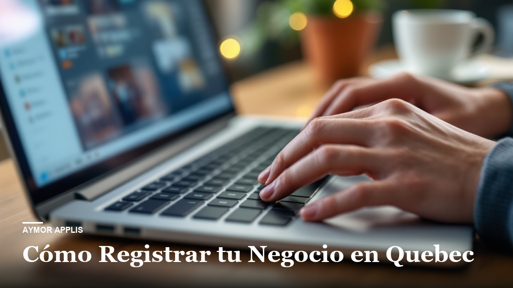

Le guide étape par étape, en français, pour enregistrer ton entreprise au Québec pour de vrai : les trois formes juridiques expliquées sans jargon, les tarifs réels du Registraire des entreprises, le NEQ, la TPS et la TVQ, la CNESST, la loi du français, et tout ce que personne ne te dit avant qu'il soit trop tard.
27,99 USD Un solo pagamento. Non si rinnova.
Se compri per la tua attività, le leggi di tutela del consumatore non si applicano. Spuntala solo se è vero.
AcquistaSpunta la casella per poter pagare.
Il pulsante si accende quando la direzione aprirà il negozio.
Questa scheda è in francese: non l'abbiamo ancora scritta in italiano. Il libro è in inglese, spagnolo, francese.
Pour qui immatricule une entreprise au Québec et veut remplir sans erreur le formulaire officiel en ligne du Registraire. Le guide suit la démarche du Québec et n'est pas un avis juridique ni fiscal.